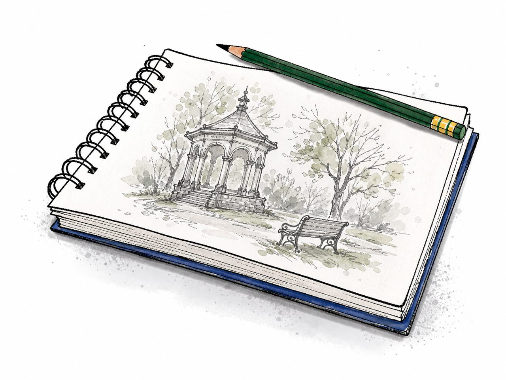

Mindeststandard: wiedergeben, ordnen, sichern
Eine interaktive Lesereise durch das Buch "Krummer Hund"
Du wiederholst Figuren, Kapitel, Konflikte und wichtige Themen. Jede Station nutzt andere Aufgabenformen, damit du den Buchinhalt nicht nur anklickst, sondern wirklich sortierst und sicherst.
15+ M-Aufgaben im Lernteil
5 R-Aufgaben im Abschlusstest
mit Bildern und Hörtexten
Ozzy als Auslöser der Handlung
Alina hinter der Fassade

Edgars Blick auf die Welt
Hinweise, Verdacht und Beweise
Teillernziele im Mindeststandard
Diese Ziele kannst du nach und nach abhaken. Sie zeigen dir, ob du den Buchinhalt grundlegend sicher wiedergeben, ordnen und anwenden kannst.
- Ich kenne die bedeutsamsten Operatoren.Materialien: 3, 4, 5, 6, 7, 9
- Ich kann einfache Fragen unter Berücksichtigung der Operatoren beantworten.Materialien: 3, 4, 5, 6, 7, 9
- Ich kann grundlegendes Wissen über die Inhalte des Buches nachweisen.Materialien: 1 bis 9
- Ich kann die wichtigsten Figuren benennen und einfache Beziehungen zuordnen.Materialien: 2, 3, 4, 5, 6, 7
- Ich kann zentrale Ereignisse der Leseetappen in der richtigen Reihenfolge wiedergeben.Materialien: 3, 4, 5, 6, 7
- Ich kann wichtige Orte, Gegenstände und Hinweise passenden Figuren oder Ereignissen zuordnen.Materialien: 3, 4, 5, 6, 7, 9
- Ich kann zentrale Themen wie Trauer, Vertrauen, Freundschaft, Verdacht und Verantwortung an einfachen Romanbeispielen wiedererkennen.Materialien: 3 bis 9
Deine Stempelkarte
Die Kacheln führen dich durch die Materialien: Operatoren, Figuren, fünf Leseetappen, Themen und am Ende ein gemischtes "Teste dein Wissen".